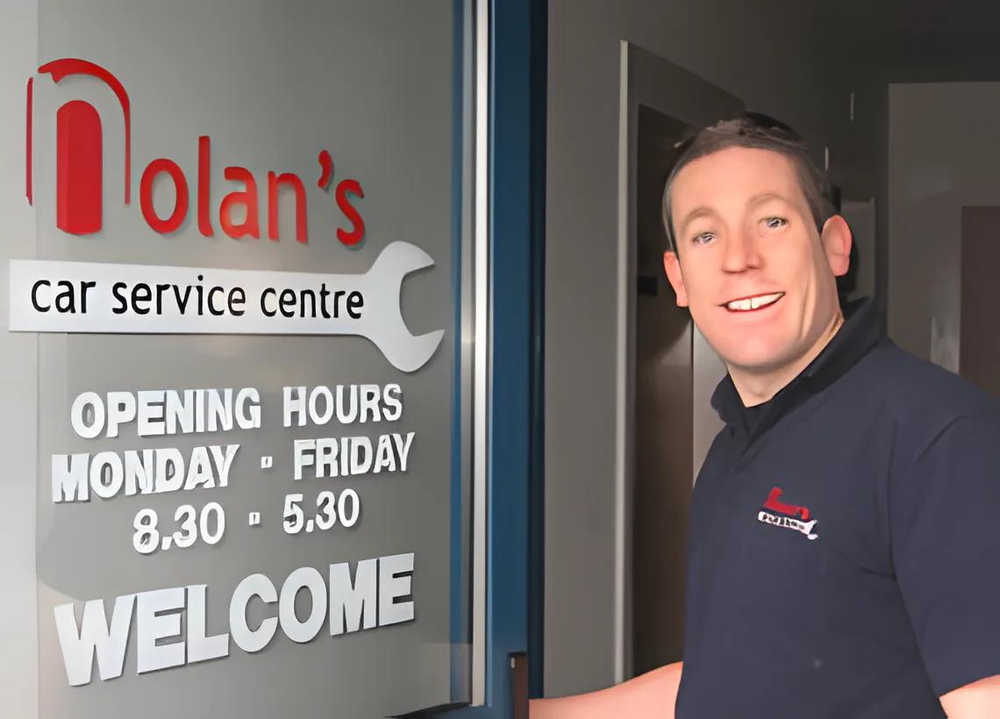
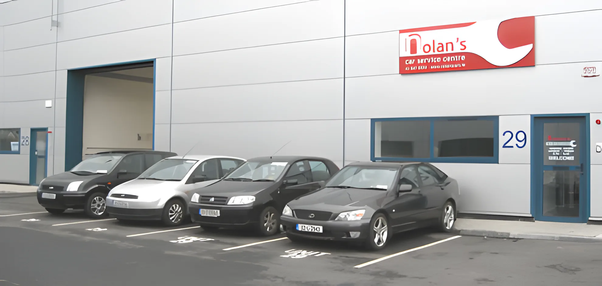
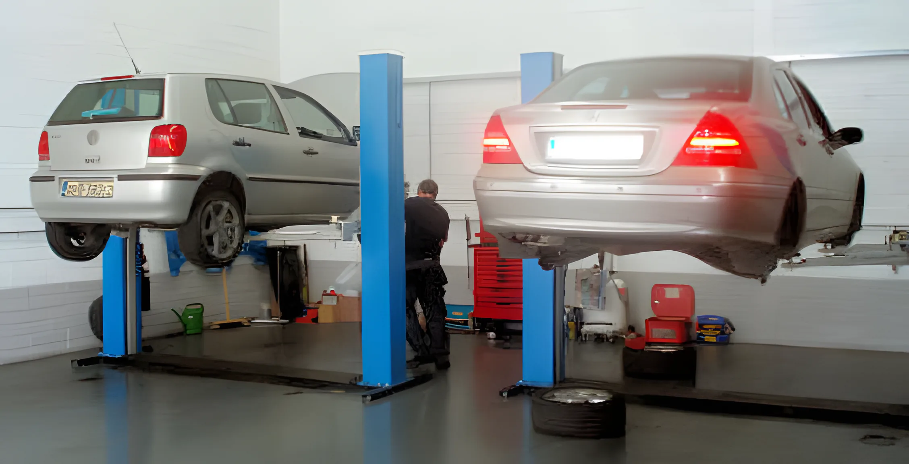

About Paul
Nolan's Car Service Centre is Paul Nolan's garage in the Port Tunnel Business Park, Clonshaugh. Over 20 years in the motor industry, on all makes and models of cars.

Paul has worked for some of the biggest garages in Dublin, and gained dealership-level training on Toyota, Opel, BMW and Mitsubishi, to name a few.
- Linders of Smithfield
- Michael Grant Opel Centre
- Grant Motors
Now he runs his own garage, where we service all makes and models of cars, from new to old. We offer our customers the best we can in service, skills, technical know-how and advanced diagnostic equipment.
Our goal is quality work at a fair price, with customers coming back to us time and time again.
If you've never done business with us, or it's been a while since you've been in, we'd like you to get to know us a little better. Ring, email, or even better, drop in and see how we can help.
We owe our success to looking after the customer for life, with a genuine and honest approach to doing business.
Nolan's Car Service Centre


Outside and inside Unit 29, Block 3.
Letters from customers
Customers wrote these to us and we published them on nolanscars.ie. Printed in full, as they sent them.
During the week I ran into a problem with the exhaust on my car. I called Paul, gave him the nature of the problem and he told me to bring the car out to him at his premises in the Port Tunnel Business Park.
Paul fixed the exhaust there and then and took time out of his already planned evening schedule to rectify my problem.
Paul gives a truly professional service, is honest in relation to all aspects of the work to be carried out and is relaxed and friendly to all customers. He even made me a cup of tea with a chocolate biscuit while I was waiting!
I would have absolutely no hesitation in recommending Paul to any of my family, friends or colleagues and I have done so in the past. All of my family members who have used him have also referred him on to their contacts.
We have been using Paul to service our cars for almost 10 years now. Having had some bad experiences with other garages Paul was a really great discovery; an honest and competent mechanic is very difficult to find. Paul always completes all work on time, and always impresses me with his ability to diagnose problems quickly.
Being an enthusiast, I have had a few specialist cars over the years that I would not let anyone else near with a wrench, but Paul always keeps them running perfectly and commands a great respect amongst a number of specialist owners clubs. I would recommend Paul for any job on any car from a routine service to an engine rebuild! Paul deserves great success and is a absolute gentleman to deal with.
I would like to put down in writing my complete satisfaction with the service provided to me by Nolan's Car Service Centre.
Paul Nolan is a go-getting, self-starting, problem-solving, all-knowing, accommodating gent of a car mechanic and I would recommend his service without hesitation to anyone who cared to ask me.
A member of our staff was recently unfortunate enough to break down in a motorway lane without warning and for no obvious reason. Paul and his team made short work of identifying and resolving the issue and the car has been back on the road ever since leaving Paul's spotless workshop.
The level of service left absolutely nothing to be desired and I can personally vouch for the prompt attention, good communication and excellent results. In fact, I almost look forward to our next breakdown.
I wish to wholeheartedly recommend Mr. Paul Nolan and his company, Nolan's Car Service Centre.
I recently required a service on my Peugeot 206, in addition to some other small items. On the day that the service was due, I was unable to go to Mr. Nolan's premises. Undeterred, Mr. Nolan called out to our offices, collected the car and assured me that all would be ready before close of business.
The work was completed to a high level and was competitively priced. Mr. Nolan also completed various other tasks and explained in a clear manner why they were required.
I would have no hesitation in recommending Paul Nolan to any of my friends or work colleagues.
Nolans Car Service Centre provided Flux Web Design with an impressive level of customer care when servicing and valeting two cars for us. Paul provided loan cars for the day and went beyond the call of duty by delivering the cars to our home after 8pm.
The quality of both the work and customer service far exceeded our expectations and we were delighted with the results. We have no hesitation in recommending Nolans Car Service Centre to anyone, for a hassle-free, value added service.
Drop in and say hello
Unit 29, Block 3, Port Tunnel Business Park, Clonshaugh, Dublin 17. Monday to Friday, 8.30 to 5.30.